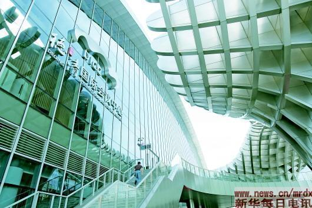
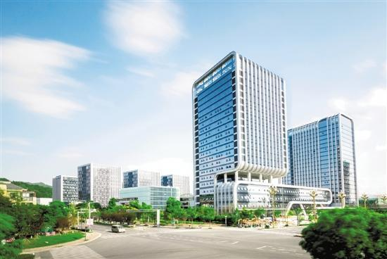

小镇格言
让德清市民真正享受到信息技术带来的便利，享受智慧生活。
时间：2020-03-25 11：20 编辑：student 来源：Internet
“领跑者”
达沃斯小镇
小到叫外卖、网约车，大到万物互联，都离不开地理信息。当今世界，地理信息技术与移动互联网、大数据、云计算等新一代信息技术深度融合 ，促进了新动能、新业态、新应用的发展，也深刻影响着人们日常生活。
然而，出乎很多人意料的是，这个既古老又前卫的产业，国内集聚度最高的区域之一竟是浙江莫干山下的一个小镇。
走进位于浙江湖州莫干山高新区的德清地理信息小镇，随处可见“地理”“测绘”“地信”等字样。1.31平方公里核心区域， 50多幢产业大楼鳞次栉比，集聚着280多个地理信息相关项目。这里已形成一条覆盖数据获取、处理、应用、服务等 内容的完整产业链，2018年，小镇营业收入达到102亿元；财政总收入超过8亿元，实现连续五年翻一番，亩均税收40.7万元。
“全球的管理经验和市场信息都在这里交流碰撞。”当地人的自豪溢于言表，“连首届联合国世界地理信息大会都放在了德清召开！”
政府提供优质服务，小镇发展一年一个台阶
达沃斯小镇
随着时间推移，小镇的设施越来越健全，短板渐渐补齐，发展一年一个台阶——2012年，浙江省地理信息产业园正式落户于此；2013年，32家企业落 户地理信息产业园；2014年，10幢产业大楼建成投用，集聚地理信息企业40家；2015年，15幢26层高的人才公寓开建，集聚地理信息企业79家， 成为省高新技术特色产业基地……
一名副局长负责协调工作，一名中层干部负责到现场解决突发状况，一名干事负责“跑腿”……高新区给每个引进园区的项目配备了3名“专业管 家”，他们从企业签约到正式动工，全程跟踪、随叫随到。
廖明也打消了最初的犹疑。有问题，找政府；没人才，政府引；没资金，政府设立扶持基金。一系列企业创业所需的要素，小镇都尽力匹配。
一天早上，廖明突发奇想，在产业园广场边的景观池里放入几尾锦鲤。此后每天上班，他总喜欢带些鱼食前来。
鱼食入池，一时间，池水激荡，鱼跃人欢。放水养鱼、共同成长，小镇的发展也同样如此。
不让人才短板影响发展质量
达沃斯小镇
今年初，莫干山高新区地信局的工作人员章炼伟来到小镇千寻位置网络（浙江）有限公司走访。刚落座，企业人力资源负责人黄秀娟直奔主题：“我们非常需要互联网、 测量测绘等方面的高端人才，但目前这类人才主要集中在杭州、上海、北京……”
章炼伟发现，每次到企业走访，引进高端人才的呼声最高。
“地理信息产业高质量发展，如果没有顶级的专家、强大的研发团队，一切都将是空中楼阁。”黄秀娟直言不讳。
而这，恰恰是德清的尴尬之处。居于大城市林立的长三角地区，小城德清的吸引力有限，该如何解决人才困局？
2017年，高新区就出台科技、人才“双十条”新政，在购房、租房方面，给予外来人才20%以上的优惠。近来，高新 区在此基础上，又加大了支持力度——对新引进的高端人才创业项目，给予最高100万元的创业启动资助和最高1000万元的研发经费资助。
目前，小镇已集聚以地理信息为主的各类创业团队67个、创业创新人才2000余人，引进院士专家10人。
费征还是觉得不够。到哪里去寻找更多人才？
多措并举，小镇里的高层次人才比例达到引进人才总量的26.8%。不满足于招英才，德清近来又把目光放向长远，自己育才——与长三角15所院校合作共建大学生就业实践基地、创新创业基地，与武汉大学测绘学院签约共建成果转化基地，定向培养专业人才。
让德清市民真正享受到信息技术带来的便利，享受智慧生活。